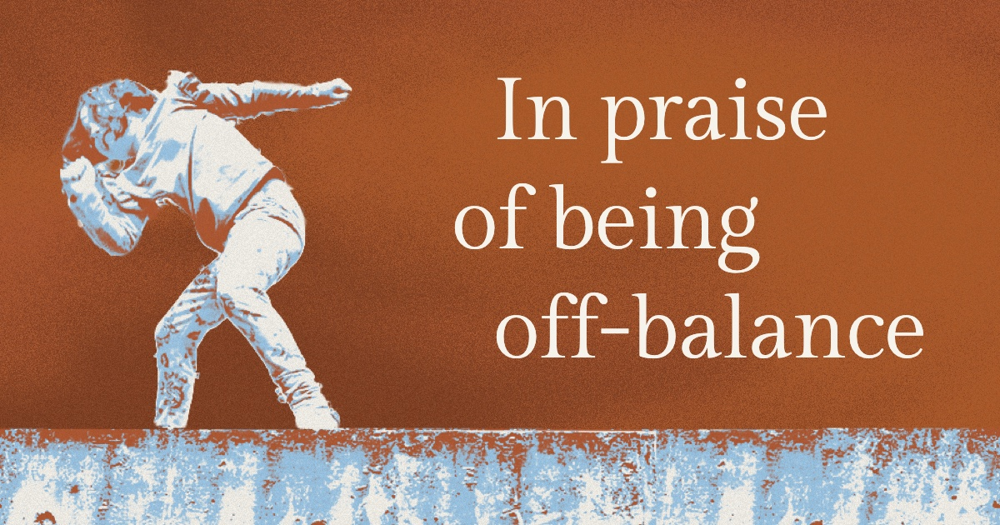

In praise of being off-balance
I looked up, blinded by the late afternoon spring sun. A shadow swung across the glowing yellow circle. Hand reaching, toes pointed. Hovering in the space between one sure grip and what comes next. My daughter had spent the better part of a year learning the monkey bars. She had bruised knees and blistered palms that turned to calluses.
There's a lot happening in that moment when you let go of one bar and swing to reach for the next. There's the feeling of excitement as you move toward something you want. You're proud that you can do this thing you couldn't do before, and you worry that you might fall like you have before.
There's the feeling of your muscles tightening, holding you strong so you don't drop. The cool bar on your palm and the pinch where your skin gets caught. The air as you swing, brushing your arms and legs and face.
There's a lot happening between when you decide to go and when you get there.
I've always been a worrier and, somehow, also overly optimistic. Which meant the space between leaving where I was and landing where I was headed was difficult to be in. I can pinpoint the moment when this changed for me, though.
In college, I borrowed my roommate's guitar (a time-worn tradition) and I printed out the chords for a song at the library. The guitar was this awkward, unwieldy box; to get any sound out of the strings, I had to press until my fingertips hurt. I'd look to the left and watch my fingers move achingly slowly onto the metal strings, counting frets under my breath.
Then I'd turn to my right and strum once. And then go back and do it all again. It went that way for weeks, finger by finger, fret by fret, strumming once every minute or so. Thank god it was only three chords to learn.
On the first day, I thought: well, I'm really bad at this. I thought, of course you are.
This time, I thought: I can't get any worse than I am today. And, if I do this tomorrow, and the day after, and the day after, I'll get a little bit better.
All I had to do was show up and try for an hour every day, in the mule-headed way I have. It might not be even, it might not be linear, but over time it would be better.
I played alone in the afternoons, and the sun would be setting, coming in through the window of the little second-story apartment my roommate and I had. On the other side of the wall a couple argued with no regard for volume.
After a while, I stopped counting frets and I grew tough calluses on my fingertips. I could finish a whole song in less than ten minutes. I started writing songs and felt good enough to play with other people. I'd reached the next bar.
What was happening for me learning to play guitar, and for my daughter in the space between one monkey bar and the next, was a time of being off-balance.
Developmental psychologist Jean Piaget had a theory about learning that he called disequilibrium. It's what happens when something a child runs into doesn't fit the mental models she has built so far. Her thinking has to change to make sense of it. And that process of change is a feeling of being off-balance.
As people learn, we move between balance, or equilibrium, and being off-balance, or disequilibrium. And off-balance is the space where learning happens.
Being off-balance feels uncomfortable; the brain craves resolution. We tend to see that period as an awkward phase, something to move through quickly. But it's the phase where the most interesting things are happening. You're rebuilding what you thought you knew to accommodate new information. It is a time of possibility. Nothing is defined yet.
If you slow down in that time, when you're feeling off-balance, you can notice. What things are going quickly and what things feel hard. You can get a lot of information not just about the thing you're learning, but about who you are as a learner and where you want to go next.
But if it's so uncomfortable, what keeps you going in the thick of it? For both of us, it was that feeling of what could be. It was knowing that if you reached a little further, you might just get it.
My daughter could see older kids who could skip bars or hang upside down. That was motivating for her, to be like the big kids. (Here she would interject to inform me that she is, in fact, a big kid too.)
She was excited. She was hungry; she was desperate to learn how to do it. She would try again and again and again. She would reach for the next bar, and she would fall. She would ask me to hold her up and help her reach farther. She practiced every day at school, at both recesses, and after school she'd ask to stay longer.
And when she finally learned to do it, oh man. That feeling of the first time you get it, when you've been trying, it's just pure joy. And you don't get there if you don't let yourself be off-balance for a bit.
Back at the monkey bars, the late afternoon sun is still in my eyes. My daughter is still in the air, one hand reaching, in the space between one grip and the next. Then, she drops to the ground, her face turned toward me with a smile. "Did you see, Mama? Did you see me?"